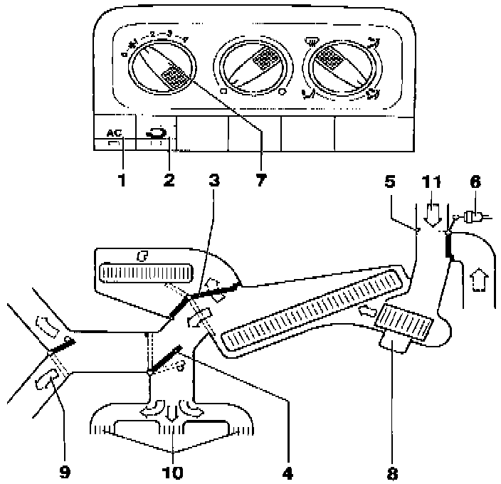
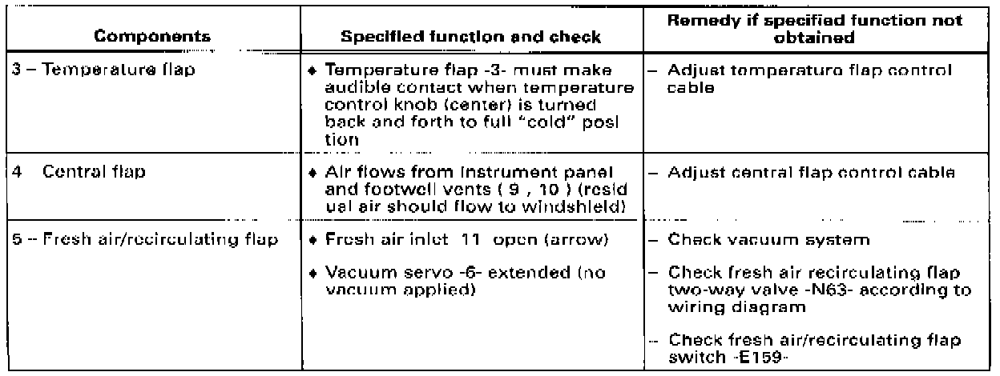

Fresh Air Flow Can Not Be Adjusted
Fresh Air Flow Cannot be Adjusted, Fresh Air Flows From Instrument Panel and Footwell Outlets:Test Condition

Fresh air blower -8- runs in all four speeds
Test Procedure:
Set ventilation control knobs as shown in image.
- A/C switch -E35- (-1-) OFF
- Fresh air/recirculating flap switch -2- OFF

Check components and specified functions using above table (image).